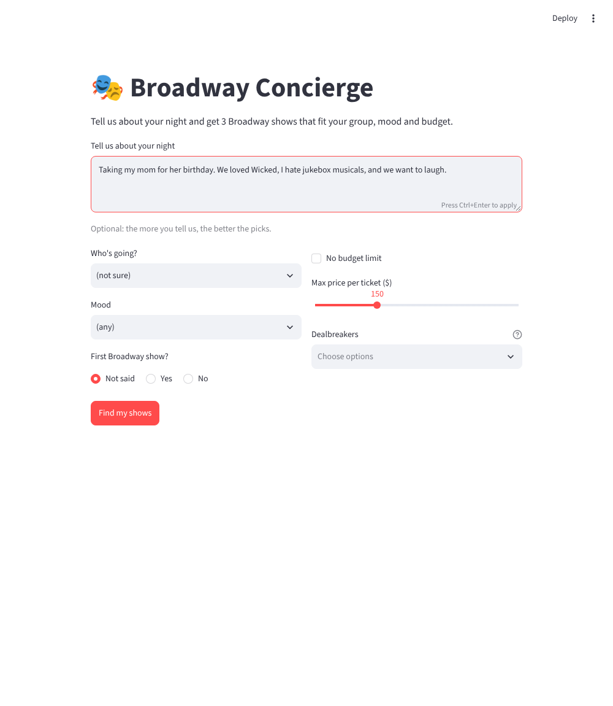

Broadway Concierge helps first-time and budget-conscious theatergoers pick the right show for their group and spot ticket scams before they pay.
Current Status: Build 2 in progress: local Streamlit prototype plus a browser version
Demo: Screenshot of the local Streamlit show recommender form (results screenshot coming next).
Try it: web version of the show recommender (34 shows running as of Nov 13, 2026).

Who is this for? Broadway Concierge is for people planning a theater night who don’t know the shows well and are watching their budget
The painful "Before" workflow: Choosing a show: People piece it together from reviews, Reddit, YouTube, and friends. No single source accounts for their group, budget, and taste, so they cross-check several tabs. General chatbots can also suggest shows that have already closed. Buying tickets: Official sellers are safe but can be pricey or sold out. So budget buyers turn to Facebook groups and forums, where nothing is verified. They check listings by instinct (seller profile, screenshots, “does this row exist?”), and scammers push payment methods with no protection, like Zelle, gift cards, and crypto. Once the money is sent, it’s gone. The gap: Recommendations ignore ticket-buying reality, and resale groups give no help judging a listing.
The "After" workflow with this product: Describe the night. The user types something like “Taking my mom, we loved Wicked, hate jukebox musicals, $150 max.” Get 3 picks. The tool returns three shows from the catalog, each with why it fits, one honest caution, and a typical price range. Find tickets. The user picks a show and checks official sources or resale groups. Paste any resale listing. If they find a cheap one, they paste it into the checker. Get a verdict. The tool returns a risk rating (low, medium, or high) and the specific red flags, such as “Zelle only,” “price far below face value,” or “Row ZZ doesn’t exist at this theater.” Decide. They buy with confidence, walk away from the scam, or switch to an official seller.
Riskiest Assumption: Broadway Concierge takes a user’s request, loads a hand-built catalog of running shows, and sends both to the Claude API, which picks three fits with a reason, a caution, and a typical price. The same pattern powers the secondary resale checker, which compares a pasted listing against a red-flag checklist and theater seating info. There’s no database and no live data, so the riskiest assumption is that the catalog is accurate and current enough to trust. Closed shows, stale prices, or wrong content warnings would sink user confidence, so verify every show and test with a few sample requests.
Simple Architecture: Typed request + form answers (who, mood, budget, dealbreakers) → Streamlit app in Python, which drops any show in data/shows.json that breaks the budget, kids' ages or dealbreakers → Claude API ranks the shows that are left → three picks, checked against the catalog so theater, price and rush info always come from the catalog, not the AI. A browser version of the same rules lives at app/.
streamlit_app.py) and a command-line version (app.py) with a hand-built catalog of 8 shows. Code removes shows that break the budget, kids' ages or dealbreakers, Claude picks from what is left, and code checks the answer. Also an 8-listing ticket scam checker and an offline test suite that needs no API key..env. Every catalog entry was written from memory and marked TODO, so nobody could say yet whether a show was still running or the prices were right.web/test_core.js plus the existing Python tests, all passing. Real run and test commands in AGENTS.md. Merged in pull request #1.